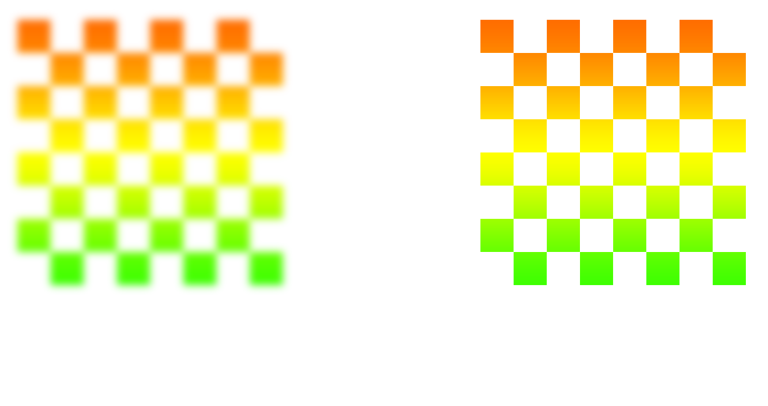

Some things
bootstrap, retina, sprites, svg
twitter bootstrap
- getbootstrap.com
- Bootstrap, Source code, Sass
- /sass/
- /sass/all.sass
@import compass @import variables @import bootstrap/bootstrap @import helpers @import layout @import navigation ... @import modals @import fix - grunt-contrib-compass
- grunt-autoprefixer
- grunt-contrib-cssmin
all.sass
@import compass
@import variables
@import bootstrap/bootstrap
@import helpers
@import layout
@import navigation
...
@import modals
@import fix
/bootstrap/bootstrap.scss
// Components
@import "component-animations";
// @import "glyphicons";
@import "dropdowns";
@import "button-groups";
@import "input-groups";
@import "navs";
// @import "navbar";
@import "breadcrumbs";
@import "pagination";
// @import "pager";
// @import "labels";
we have
- independent framework
- only needed styles
- easy to work
- only 1 minified css-file
- /sass/ folder
sass/ _fix.sass _helpers.sass _layout.sass _modals.sass _navigation.sass ... _variables.sass all.sass bootstrap/ _alerts.scss _badges.scss ... bootstrap.scss
- retina?
- hell yea, retina!
200% scale
github.com/Retina-Images
how it works
- devicePixelRatio (js or css)
- retinaimages.php
- .htaccess
- that's all!
images
- image.jpg, image@2x.jpg (same folder)
- only one image is downloaded
- jpg, png, gif, bmp
- fallback to regular image if high-res image
isn’t available - ... if JavaScript and CSS or Cookies are disabled
html

css
.some-selector {
background-image: url("image.png");
background-size: 300px 90px;
}
.some-selector {
background-image: url("image.png");
background-size: 100% 100%;
}
.some-selector {
background-image: url("image.png");
background-size: cover;
}
page load (speed)
- grunt-contrib-imagemin
- use sprites
sprite icons - css
.i {
background: url('/img/icons-s51b9bb1759.png');
display: inline-block;
}
.i.icon-arrow-down {
background-position: 0 -47px;
height: 4px;
width: 8px;
}
.i.icon-arrow-left-gray {
background-position: -8px -47px;
height: 13px;
width: 9px;
}
∞ lines of code
sprite icons - compass
$icons: sprite-map("icons/*.png", $layout: smart)
i
background: $icons
display: inline-block
@each $i in sprite_names($icons)
&.icon-#{$i}
background-position: sprite-position($icons, $i)
+sprite-dimensions($icons, $i)
(8 lines)
retina sprites (css)
@media (-webkit-min-device-pixel-ratio: 2),
(-o-min-device-pixel-ratio: 3 / 2),
(min--moz-device-pixel-ratio: 2),
(min-device-pixel-ratio: 2),
(min-resolution: 144dppx) {
.sprite2 {
background-image: url('../images/icons-2x-s93dce01c9d.png');
background-position: 0 -25px;
background-size: 45px 95px;
height: 25px;
width: 25px;
}
}
github.com/Gaya/Retina-Sprites-for-Compass
i
@each $i in sprite_names($icons-retina)
&.icon-#{$i}
+use-sprite($i)
(4 lines)
svg

svg fallback
if (!Modernizr.svg) {
$("img[src$='.svg']")
.attr("src", fallback);
}
svgeezy
benhowdle.im/svgeezy
svg fallbacks in css - modernizr
.my-element {
background-image: url(image.svg);
}
.no-svg .my-element {
background-image: url(image.png);
}
svg fallbacks in css - without dependency
.my-element {
background-image: url(fallback.png);
background-image: url(image.svg), none;
}
libraries
- raphaeljs.com (ie6+)
- code.google.com/p/svgweb (flash)
- svgjs.com (modern)
- snapsvg.io (modern & adobe)